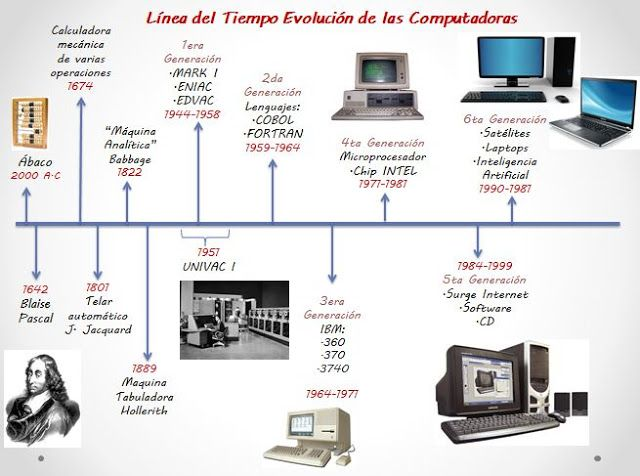

La Evolución del Hardware:
La historia del hardware comienza en el siglo XIX con la creación de la Máquina Analítica de Charles Babbage, considerada el primer diseño conceptual de una computadora. Sin embargo, no fue hasta la década de 1940 que vimos el nacimiento de las primeras computadoras electrónicas, como el ENIAC. Estas máquinas ocupaban habitaciones enteras y utilizaban válvulas de vacío para realizar cálculos. A pesar de su tamaño y consumo energético, sentaron las bases de la informática moderna, allanando el camino hacia desarrollos más compactos y eficientes
En las décadas de 1950 y 1960, se produjo un avance significativo con la invención del transistor, reemplazando las válvulas de vacío y permitiendo la creación de dispositivos más pequeños y fiables. Esto dio paso a las computadoras de segunda generación, más rápidas y menos propensas a fallos. Durante los años 70, el desarrollo de los microprocesadores como el Intel 4004 revolucionó la industria, permitiendo la creación de computadoras personales. Empresas como IBM y Apple empezaron a llevar la tecnología al ámbito doméstico y empresarial.
La década de 1980 fue testigo de la expansión de las PCs en los hogares, y el hardware comenzó a mejorar rápidamente. Los avances en memoria, almacenamiento y gráficos transformaron las capacidades de las computadoras, haciéndolas más accesibles y versátiles. Durante los años 90, la aparición de la arquitectura x86 y los sistemas operativos como Windows llevaron la computación a millones de usuarios en todo el mundo, marcando el comienzo de la era digital.
Hoy en día, el hardware ha evolucionado hacia una escala sin precedentes. Procesadores multicore, unidades de almacenamiento sólido (SSD) y tecnologías emergentes como la computación cuántica y la inteligencia artificial están revolucionando el futuro del hardware. Desde teléfonos inteligentes hasta servidores en la nube, el hardware se ha convertido en parte fundamental de la vida cotidiana, impulsando avances en todos los campos, desde el entretenimiento hasta la ciencia.
Publicado el: 08 de septiembre de 2024